本页不显示模型名称、不显示公开类别——它们的对照留在盲号对照_另表.md，审阅时不得作为依据。
每张图下面有三个答案集（甲/乙/丙），**顺序已按图打乱**。请就每个答案集分别回答六个问题：
clock_direction 写成字符串 "null" 而非 JSON null）案例属开发审阅，不是新盲测，也不是专家考卷。
wafer_00045633_013 来源 val84每类2图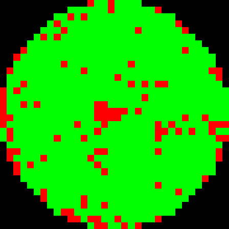
wafer_00036756_010 来源 val84每类2图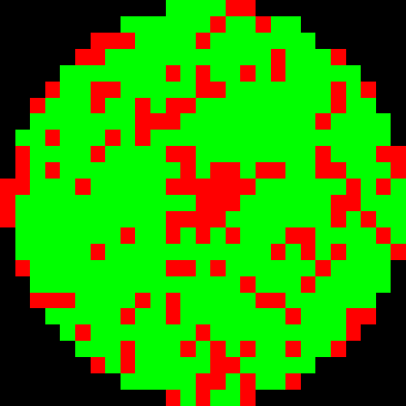
wafer_00019331_006 来源 val84每类2图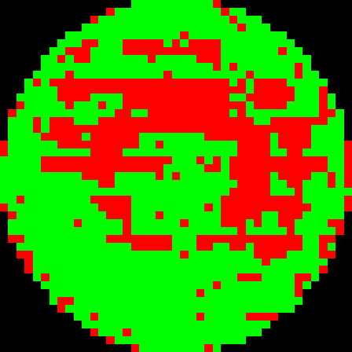
wafer_00045384_019 来源 val84每类2图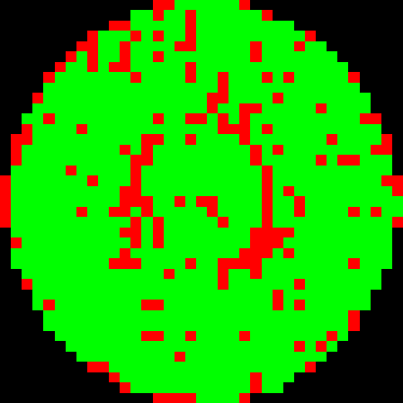
wafer_00047411_016 来源 val84每类2图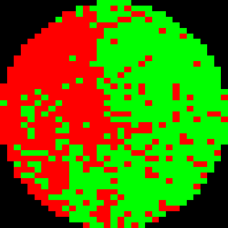
wafer_00047511_013 来源 val84每类2图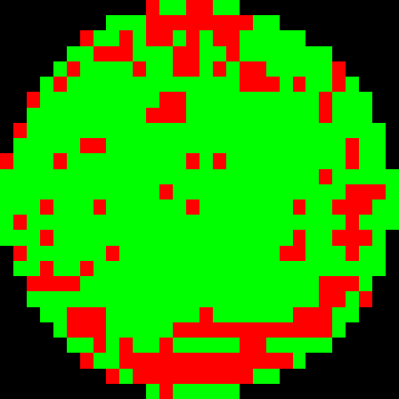
wafer_00019814_014 来源 val84每类2图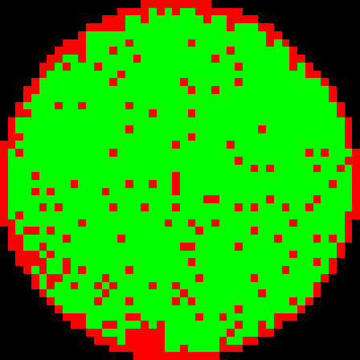
wafer_00011690_007 来源 val84每类2图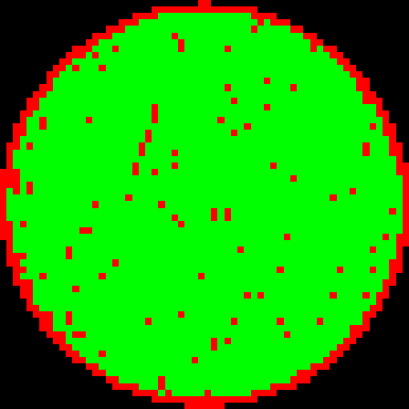
wafer_00026714_009 来源 val84每类2图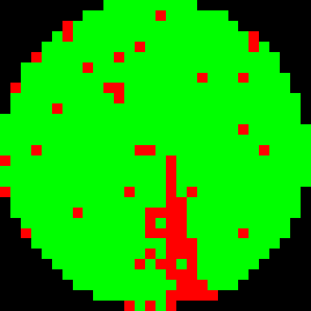
wafer_00022388_005 来源 val84每类2图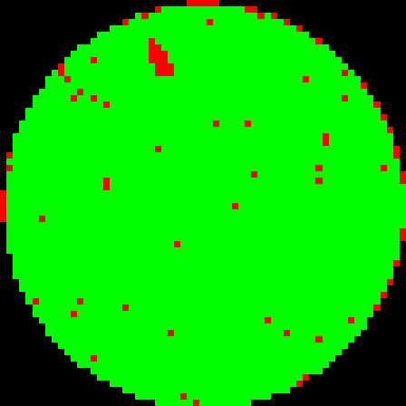
wafer_00040406_017 来源 val84每类2图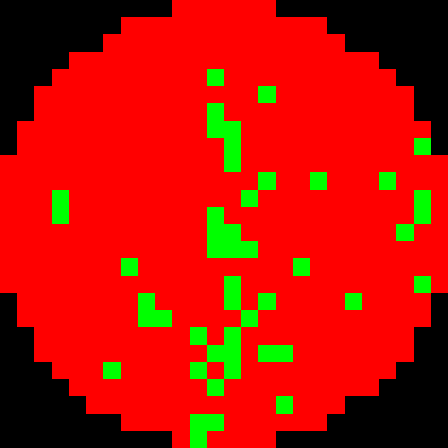
wafer_00043050_009 来源 val84每类2图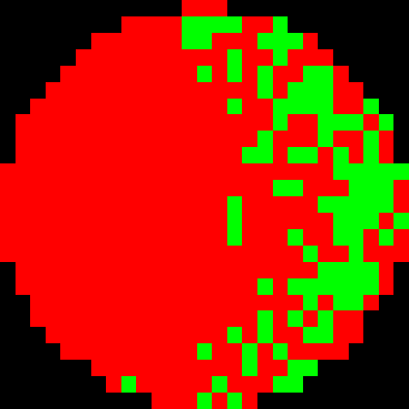
wafer_00045360_022 来源 val84每类2图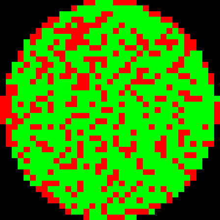
wafer_00040378_016 来源 val84每类2图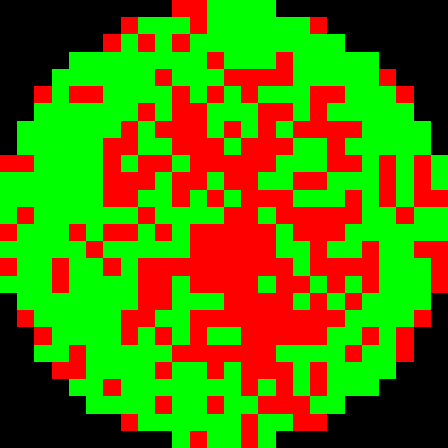
wafer_00019033_001 来源 val84每类2图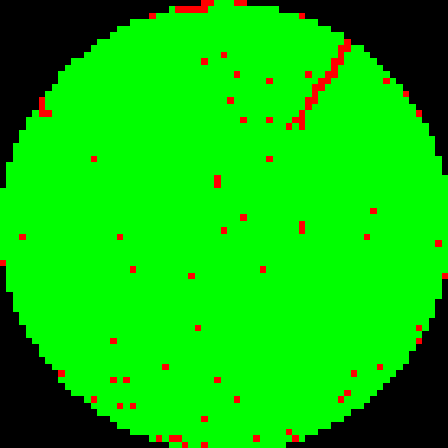
wafer_00043705_021 来源 val84每类2图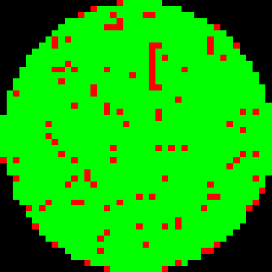
wafer_00045191_016 来源 val84每类2图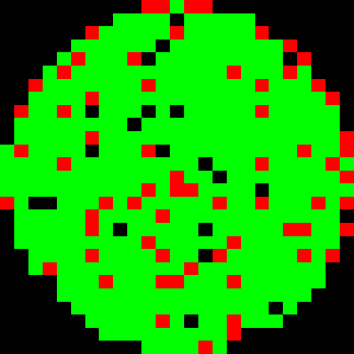
wafer_00043329_001 来源 val84每类2图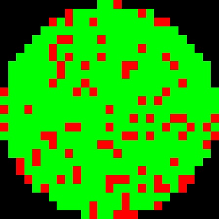
wafer_00003298_021 来源 完整dev18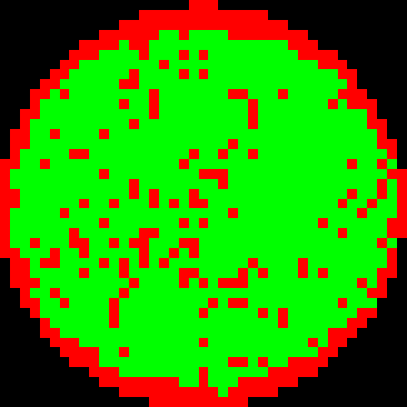
wafer_00003822_012 来源 完整dev18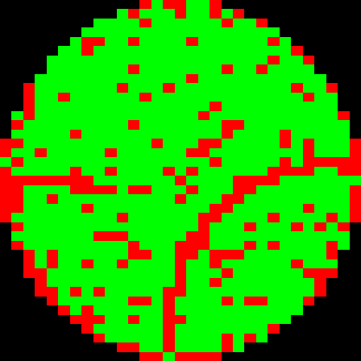
wafer_00018023_017 来源 完整dev18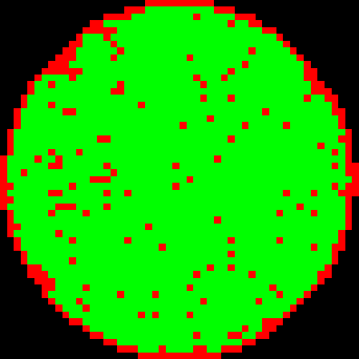
wafer_00029697_025 来源 完整dev18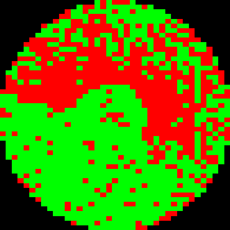
wafer_00032899_015 来源 完整dev18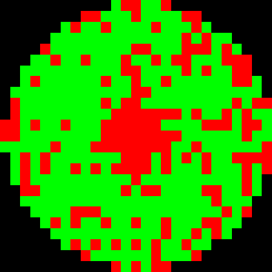
wafer_00039578_021 来源 完整dev18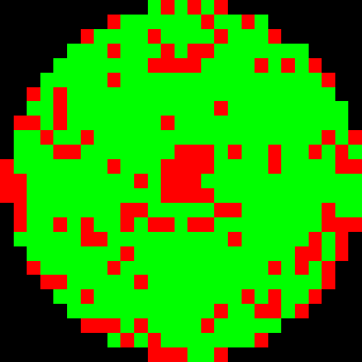
wafer_00040556_007 来源 完整dev18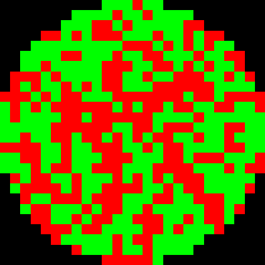
wafer_00041108_014 来源 完整dev18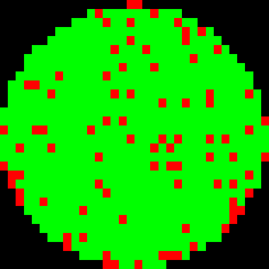
wafer_00042202_013 来源 完整dev18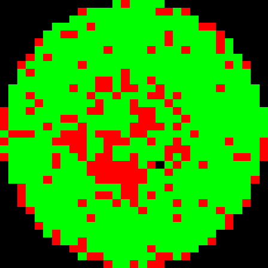
wafer_00042778_024 来源 完整dev18wafer_00043183_023 来源 完整dev18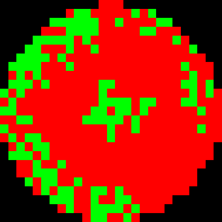
wafer_00043921_007 来源 完整dev18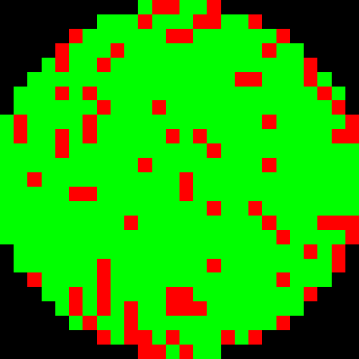
wafer_00043980_001 来源 完整dev18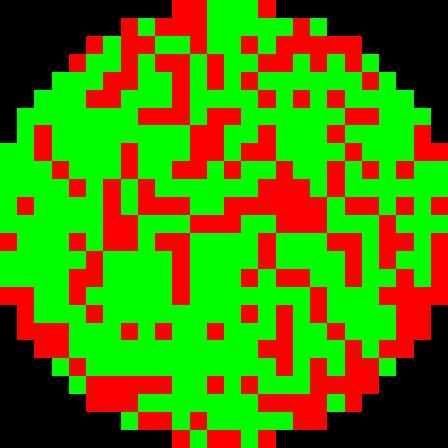
wafer_00044300_025 来源 完整dev18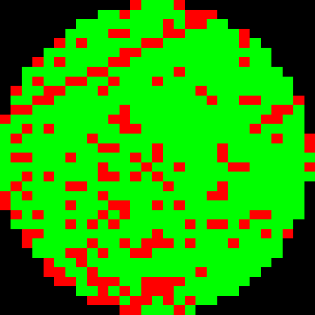
wafer_00045337_006 来源 完整dev18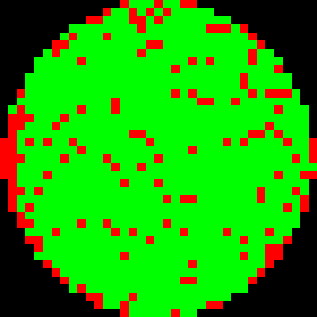
wafer_00045589_021 来源 完整dev18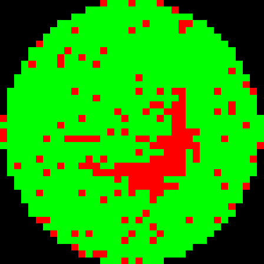
wafer_00046667_020 来源 完整dev18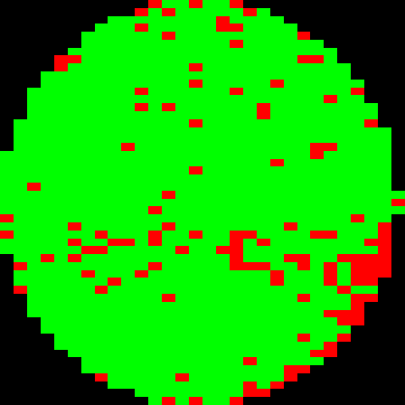
wafer_00047246_025 来源 完整dev18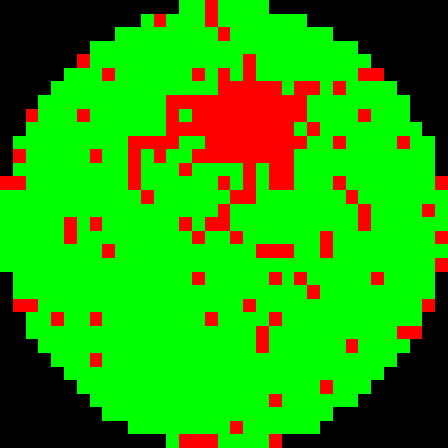